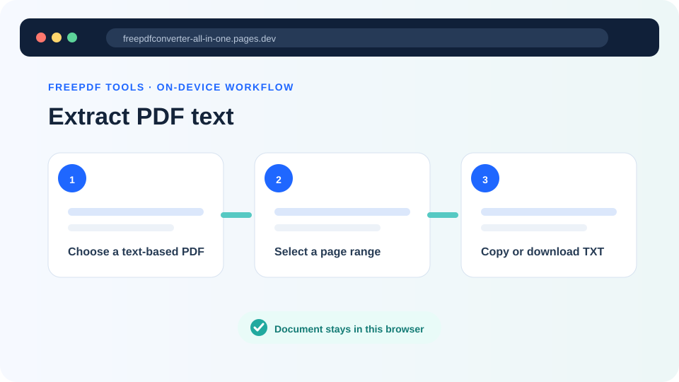
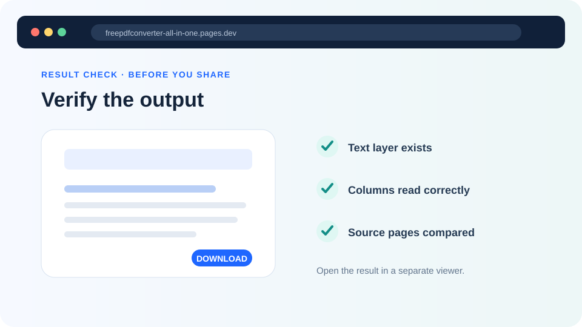

How to extract text from a PDF without OCR
Copy an existing text layer from selected pages, understand why columns and tables can change order, and identify when a scanned page needs OCR instead.
Updated August 11, 2026 · By FreePDF Tools · 8 minute read


First check whether the PDF contains a text layer
Open the PDF in a normal viewer and try to select an individual sentence. If you can highlight letters and search for a known word, the page probably has extractable text. If dragging selects the entire page as one rectangle, the page is probably a scanned image. Some scans have an invisible OCR text layer behind the image, so searching is a better test than appearance alone.
The FreePDF tool uses PDF.js to read characters already encoded in the document. It does not run optical character recognition. That distinction keeps the tool small and honest: a blank result from a scanned page does not mean the page is empty; it means the PDF supplied no usable text layer.
PDFs store positions, not paragraphs
A word processor stores paragraphs, headings and tables as semantic structures. A PDF primarily describes what should be drawn at coordinates. Text can be split into individual characters or short runs and placed anywhere on the page. The extraction tool groups nearby runs into lines and preserves page boundaries, but it cannot reconstruct every author's intended reading order.
Two columns may alternate, table cells may be read across unexpected rows, headers can appear between body paragraphs and hyphenated line endings may remain. Custom font encodings can produce missing or incorrect characters even when the page looks normal. Accessible tagged PDFs usually provide better structure, but plain TXT still cannot carry images, fonts, links or layout.
Extract a useful page range in your browser
- Open the Extract PDF Text tool and choose an unlocked PDF.
- Enter the first and last pages you need. A narrow range is faster and easier to review.
- Select Extract text. The page labels each result section with its PDF page number.
- Read the preview. If it is empty, test whether the source page has a selectable text layer.
- Copy the text or download the UTF-8 TXT file, then compare important passages with the PDF.
Read the PDF text layer locally
The PDF and extracted text stay in the browser tab unless you choose a download.
Clean the result without changing meaning
Remove repeated page headers and footers only after checking that they are not part of a citation or section. Join line-break hyphenation carefully: “re-cover” and “recover” are different words. Preserve the inserted page headings when traceability matters, because they let you return to the exact source page.
If reading order is poor, extract one column or section manually from the viewer, use an accessibility-aware PDF application, or return to the source document. If the page is scanned, use an OCR tool appropriate for the language and sensitivity of the material. OCR output also needs review because similar characters—such as 0 and O, or 1 and l—are frequently confused.
Privacy while working with extracted text
The tool processes both the PDF and its text locally. The preview remains in page memory until you clear it, refresh or close the tab. Clipboard managers, downloaded TXT files, browser extensions and shared-device histories are outside the site's control. Clear the page and handle the downloaded text according to the source document's sensitivity.
Troubleshooting checklist
- Use Unlock PDF with the known password before loading an authorized protected document.
- Try a smaller range if a very large PDF strains browser memory.
- Compare accented characters and non-Latin scripts carefully.
- Use the original source document when exact tables or formatting matter.